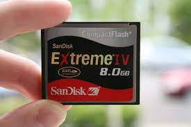

Memorias Flash
¿Qué son?

Una memoria flash es un tipo de dispositivo no volátil (no necesita el continuo suministro de corriente eléctrica para seguir almacenando la información).
Es una evolución al tipo de memorias anteriormente utilizadas en cuanto al aspecto económico y físico y en el aspecto de velocidad ya que pueden borrar y escribir en la misma operación
Creador
El inventor de este tipo de memoria es Fujio Masuoka en 1984, se basó en las memorias EEPROM existentes en esa época creación fue presentada en la reunión de aparatos electrónicos de la IEEE.

¿Cómo avanzó?
Entre los años 1994 y 1998, se desarrollaron los principales tipos de memoria que se conocen hoy, como son la SmartMedia o la CompactFlash.
En 1994 SanDisk comenzó a comercializar tarjetas de memoria(CompactFlash)
En 1998, la compañía Río comercializo el primer ‘Walkman’ aprovechando el modo de funcionamiento de SmartMedia solucionando el problema de los “saltos” provocados en el discman.
TIPOS